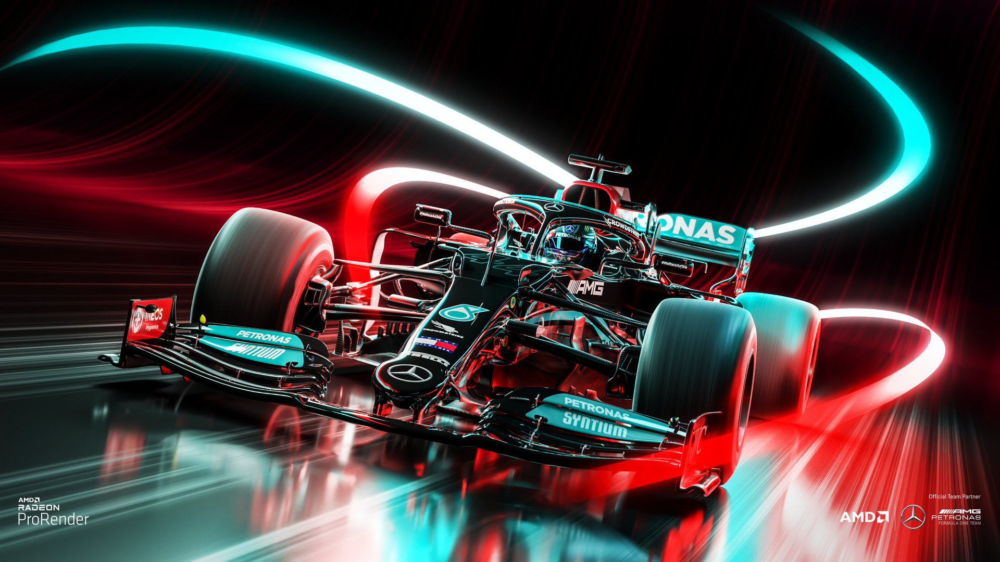

FORMULA UNO
LA FORMULA 1 es la competición de automovilismo más prestigiosa y tecnológica del mundo. Desde su creación en 1950, reúne a los mejores pilotos, equipos e ingenieros para competir en circuitos emblemáticos alrededor del planeta.
Cada temporada ofrece una combinación única de velocidad, estrategia, innovación y emoción, donde décimas de segundo pueden marcar la diferencia entre la victoria y la derrota. Los monoplazas de Fórmula 1 representan la vanguardia de la ingeniería automotriz, incorporando tecnologías avanzadas que posteriormente influyen en la industria automotriz global.
Aqui conoceras los equipos mas ganadores y emblematicos de la categoria y los que pintan a ser grandes y los mejores pilotos de la categoria y los mas iconicos.

-WALTER RODRIGO CHI CHAN
-FERNANDO JESUS CAHUN CHI
-HENRY MAURICIO BALAN TOTO 602